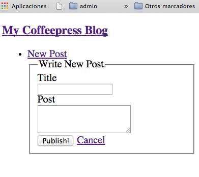

Sig: MongoDB Sup: CoffeeScript y Express Ant: Porting to Coffeescript Con:
[~/src/coffee/coffeepress(master)]$ npm install --save-dev mocha expect chai
[~/src/coffee/coffeepress(master)]$ cat package.json
{
"name": "coffeepress",
"version": "0.0.0",
"private": true,
"scripts": {
"start": "node ./bin/www"
},
"dependencies": {
"body-parser": "~1.10.2",
"cookie-parser": "~1.3.3",
"debug": "~2.1.1",
"express": "~4.11.1",
"jade": "~1.9.1",
"morgan": "~1.5.1",
"serve-favicon": "~2.2.0"
},
"devDependencies": {
"expect": "~1.6.0",
"chai": "~2.2.0",
"mocha": "~2.2.1"
}
}
test para las pruebas:
[~/src/coffee/coffeepress(master)]$ mkdir testy creamos una primera prueba:
[~/src/coffee/coffeepress(master)]$ cat test/example.coffee
chai = require 'chai'
expect = chai.expect
describe "feature", ->
it "should add two numbers", ->
expect(2+2).to.equal(4)
para ejecutarla debemos hacer:
$ mocha --compilers coffee:coffee-script/register -R spec
feature
ok: should add two numbers
1 passing (7ms)
mocha tiene una opción:
--compilers <ext>:<module>,...Que indica que debemos usar el
module(s) para compilar los ficheros
con extensión ext.
--require option to activate your registration script.
-R o bien --reporter va seguida de un <name>
y especifica el
reporter a utilizar.
-R may also be used to utilize third-party reporters. For example if you
npm install mocha-lcov-reporter
you may then do --reporter mocha-lcov-reporter.
--reporters nos da la lista de reporters que
podemos utilizar:
[~/javascript/expressjs/clase-express-coffee]$ mocha --reporters
dot - dot matrix
doc - html documentation
spec - hierarchical spec list
json - single json object
progress - progress bar
list - spec-style listing
tap - test-anything-protocol
landing - unicode landing strip
xunit - xunit reporter
html-cov - HTML test coverage
json-cov - JSON test coverage
min - minimal reporter (great with --watch)
json-stream - newline delimited json events
markdown - markdown documentation (github flavour)
nyan - nyan cat!
Vamos ahora a hacer una prueba sobre nuestro código. Nuestro objetivo es hacer que nuestra aplicación funcione como un pequeño blog.
Reescribiremos routes/index.coffee de manera que por cada ruta URL de la
aplicación el objeto routes exportado por routes/index.coffee disponga
de un método que procesa esa ruta. Así:
get a la ruta / será procesada por el método index
get a la ruta /post/new será procesada por un método newPost,
post a la ruta /post/new será procesada por un método addPost,
routes
se establece en
el cuerpo principal de la aplicación:
[~/javascript/expressjs/coffee-mongo(master)]$ sed -ne '3p' app.coffee routes = require "./routes" [~/javascript/expressjs/coffee-mongo(master)]$ sed -ne '24,27p' app.coffee app.get "/", routes.index app.get "/post/new", routes.newPost app.post "/post/new", routes.addPost app.get "/post/:id", routes.viewPost
index del objeto
routes.
[~/src/coffee/coffeepress(master)]$ cat test/routes-test.coffee
chai = require 'chai'
expect = chai.expect
routes = require "../routes/index"
describe "routes", ->
req = {}
res = {}
describe "index", ->
it "should display index with posts", ->
res.render = (view, vars) ->
expect(view).equal "index"
expect(vars.title).equal "My Coffeepress Blog"
routes.index(req, res)
index and that the variable title
is equal to what we expect to be passed in.
res.render(view [, locals] [, callback])
which renders the file whose name is given by view and sends the rendered HTML string to the client.
Optional parameters of res.render:
locals, an object whose properties define local variables for the view.
callback, a callback function.
If provided, the method returns both the possible error and rendered string, but does not perform an automated response.
When an error occurs, the method invokes next(err)
internally.
// if a callback is specified, the rendered HTML string has to be sent explicitly
res.render('index', function(err, html) {
res.send(html);
});
index que fué generada por Express contiene el siguiente código:
[~/src/coffee/coffeepress(master)]$ cat routes/index.coffee
express = require('express')
router = express.Router()
### GET home page. ###
router.get '/', (req, res, next) ->
res.render 'index', title: 'Express'
return
module.exports = router
como se ve, lo que estamos haciendo en la prueba es sobreescribir el método render
del objeto res por
un falso render que hace las dos pruebas:
routes = require "../routes/index"
...
res.render = (view, vars) ->
expect(view).equal "index"
expect(vars.title).equal "My Coffeepress Blog"
routes.index(req, res)
Run the tests:
[~/src/coffee/coffeepress(master)]$ mocha --compilers coffee:coffee-script/register -R spec
routes
index
1) should display index with posts
0 passing (7ms)
1 failing
1) routes index should display index with posts:
TypeError: Object function router(req, res, next) {
router.handle(req, res, next);
} has no method 'index'
at Context.<anonymous> (/Users/casiano/local/src/coffee/coffeepress/test/routes-test.coffee:13:14)
...
routes = require "../routes/index" no tiene un método index.
Se lo añadimos:
[~/src/coffee/coffeepress(master)]$ cat routes/index.coffee
express = require('express')
module.exports =
index: (req, res) ->
res.render 'index', { title: 'My Coffeepress Blog' }
Y ahora las pruebas pasan:
[~/src/coffee/coffeepress(master)]$ mocha --compilers coffee:coffee-script/register -R spec
routes
index
ok: should display index with posts
1 passing (6ms)
expect(vars.posts).eql []
right after the title assertion:
[~/src/coffee/coffeepress(master)]$ cat test/routes-test.coffee
chai = require 'chai'
expect = chai.expect
routes = require "../routes/index"
describe "routes", ->
req = {}
res = {}
describe "index", ->
it "should display index with posts", ->
res.render = (view, vars) ->
expect(view).equal "index"
expect(vars.title).equal "My Coffeepress Blog"
expect(vars.posts).deep.equal []
routes.index(req, res)
Obsérvese que hemos usado el método deep. También podríamos haber usado eql en vez
de .deep.equal.
Now the tests fail:
[~/src/coffee/coffeepress(master)]$ mocha --compilers coffee:coffee-script/register -R spec
routes
index
1) should display index with posts
0 passing (12ms)
1 failing
1) routes index should display index with posts:
AssertionError: expected undefined to deeply equal []
posts
array variable available in the template.
[~/src/coffee/coffeepress(master)]$ cat routes/index.coffee
express = require('express')
module.exports =
index: (req, res) ->
res.render 'index',
title: 'My Coffeepress Blog'
posts: []
and now the tests pass:
[~/src/coffee/coffeepress(master)]$ mocha --compilers coffee:coffee-script/register -R spec
routes
index
ok: should display index with posts
1 passing (12ms)
Completemos la vista index:
[~/src/coffee/coffeepress(master)]$ cat views/index.jade
extends layout
block content
- each post in posts
.page-header
li
a(href="/post/#{post.id}")= post.title
.content!=post.body
Necesitamos un layout:
~/src/coffee/coffeepress(master)]$ cat views/layout.jade
doctype html
html
head
title= title
//link(rel="stylesheet", href="http://maxcdn.bootstrapcdn.com/bootstrap/3.2.0/css/bootstrap.min.css")
//script(src="https://ajax.googleapis.com/ajax/libs/jquery/1.11.1/jquery.min.js")
//script(src="http://maxcdn.bootstrapcdn.com/bootstrap/3.2.0/js/bootstrap.min.js")
style(type="text/css")
#content { padding-top: 60px;}
body
.topbar-wrapper
.topbar
.topbar-inner
.container
h3: a(href="/") My Coffeepress Blog
ul.nav
li: a(href="/post/new") New Post
#content.container
block content
block and extends keywords.
...
#content.container
block content
block is simply a
block of Jade
that may be replaced within a child
template, this process is recursive.
extends keyword allows a template to extend a layout or parent template.
It can then override certain pre-defined blocks of content.
layout, we simply create
the index.jade
file and use the extends directive, giving the path
(with or without the .jade extension).
block declaration:
block content
[~/src/coffee/coffeepress(master)]$ cat -n test/routes-test.coffee
1 chai = require 'chai'
2 expect = chai.expect
3 routes = require "../routes/index"
4
5 describe "routes", ->
6 req = {}
7 res = {}
8 describe "index", ->
9 it "should display index with posts", ->
.. ...
15
16 describe "new post", ->
17 it "should display the add post page", ->
18 res.render = (view, vars) ->
19 expect(view).equal "add_post"
20 expect(vars.title).equal "Write New Post"
21
22 routes.newPost(req, res)
El test falla porque routes carece de un método newPost:
[~/src/coffee/coffeepress(master)]$ mocha --compilers coffee:coffee-script/register -R spec test/routes-test.coffee
routes
index
ok: should display index with posts
new post
1) should display the add post page
1 passing (17ms)
1 failing
1) routes new post should display the add post page:
TypeError: Object #<Object> has no method 'newPost'
newPost al código de la ruta:
[~/src/coffee/coffeepress(master)]$ cat -n routes/index.coffee
1 express = require('express')
2
3 module.exports =
4 index: (req, res) ->
5 res.render 'index',
6 title: 'My Coffeepress Blog'
7 posts: []
8
9 newPost: (req, res) ->
10 # do nothing
¡Cuando ejecutamos las pruebas pasan!:
[~/src/coffee/coffeepress(master)]$ mocha --compilers coffee:coffee-script/register -R spec test/routes-test.coffee
routes
index
ok: should display index with posts
new post
ok: should display the add post page
2 passing (8ms)
That’s not good.
Esto es así porque res.render nunca es llamado ya que
el cuerpo de newPost es vacío.
18 res.render = (view, vars) -> 19 expect(view).equal "add_post" 20 expect(vars.title).equal "Write New Post" 21 22 routes.newPost(req, res)
How can we make absolutely sure the test gets called during our test run?
done.
done to the callback of it()
Mocha will know that it should wait for completion.
done is called or until some time limit is exceeded
done
is a callback that we can call anywhere to indicate the test is
done.
[~/src/coffee/coffeepress(master)]$ cat test/routes-test.coffee
chai = require 'chai'
expect = chai.expect
routes = require "../routes/index"
describe "routes", ->
req = {}
res = {}
describe "index", ->
it "should display index with posts", ->
...
describe "new post", ->
it "should display the add post page", (done)->
res.render = (view, vars) ->
expect(view).equal "add_post"
expect(vars.title).equal "Write New Post"
done()
routes.newPost(req, res)
Now it fails since the done() callback is never called:
[~/src/coffee/coffeepress(master)]$ mocha --compilers coffee:coffee-script/register -R spec test/routes-test.coffee
routes
index
ok: should display index with posts
new post
1) should display the add post page
1 passing (2s)
1 failing
1) routes new post should display the add post page:
Error: timeout of 2000ms exceeded
at [object Object].<anonymous> (/usr/loc
Let’s go ahead and implement the route and connect it into our router.
~/src/coffee/coffeepress(master)]$ cat routes/index.coffee
express = require('express')
module.exports =
index: (req, res) ->
...
newPost: (req, res) ->
res.render 'add_post', title:"Write New Post"
And connecting it up in the app.coffee:
[~/src/coffee/coffeepress(master)]$ sed -ne '20,21p' app.coffee app.get '/', routes.index app.get '/post/new', routes.newPost
Ademas tenemos que añadir la vista add_post:
[~/src/coffee/coffeepress(master)]$ cat views/add_post.jade
extends layout
block content
form(method="post", action="/post/new")
fieldset
legend=title
.clearfix
label(for="title") Title
.input
input.xlarge#title(type="text", name="title")
.clearfix
label(for="post") Post
.input
textarea#post.xxlarge(name="body",rows="3")
.actions
input.btn.primary(type="submit", value="Publish!")
|
a.btn(href="/") Cancel
<fieldset> tag is used to group related elements in a form.
input.xlarge#title(type="text", name="title") ... textarea#post.xxlarge(name="body",rows="3")using
req.body. It
Contains key-value pairs (with keys title, body)
of data submitted in the request body.
By default, req.body is undefined,
and is populated when you use body-parsing middleware such as
body-parser.

[~/src/coffee/coffeepress(master)]$ mocha --compilers coffee:coffee-script/register -R spec test/routes-test.coffee
routes
index
ok: should display index with posts
new post
ok: should display the add post page
2 passing (9ms)
Vamos a crear un gulpfile para ejecutar las tareas mas comunes
(véase el post
A gulp of coffee: your gulpfile in coffeescript):
[~/src/coffee/coffeepress(master)]$ cat gulpfile.coffee
gulp = require('gulp')
shell = require('gulp-shell')
# run coffee server via nodemon https://github.com/remy/nodemon
gulp.task 'default', ->
gulp.src('').pipe shell([ 'DEBUG=coffeepress:* nodemon bin/www.coffee' ])
# run coffee server
gulp.task 'cofserver', ->
gulp.src('').pipe shell([ 'coffee app.coffee' ])
gulp.task 'test', [ 'mocha' ]
gulp.task 'mocha', ->
gulp.src('').pipe shell(['mocha --compilers coffee:coffee-script/register -R spec'])
# run mongod server
gulp.task 'mongod', ->
gulp.src('').pipe shell([ 'mongod' ])
Este es el correspondiente código de la version javascript:
[~/src/coffee/coffeepress(master)]$ cat gulpfile.js
// Note the new way of requesting CoffeeScript since 1.7.x
require('coffee-script/register');
// This bootstraps your Gulp's main file
require('./gulpfile.coffee');
Es necesario instalar gulp-shell:
[~/src/coffee/coffeepress(master)]$ npm install --save-dev gulp-shellahora podemos ejecutar las pruebas con
gulp test.
[~/src/coffee/coffeepress(master)]$ cat routes/index.coffee
express = require('express')
debug = require('debug')('coffeepress:server')
posts = [ {id:0, title: "hi", body: "Hola todo el mundo"}, {id:1, title: "world", body: "I like <b>coffee</b>"}]
module.exports =
index: (req, res) ->
debug "en index"
res.render 'index',
title: 'My Coffee Blog'
posts: posts
newPost: (req, res) ->
debug "en newPost"
res.render 'add_post', title:"Write New Post"
addPost: (req, res) ->
debug "en addPost"
debug req.body
post = req.body
# [post.title, post.body ] = [req.body.title, req.body.body]
post.id = posts.length
posts.push post
res.redirect "/"
req.body·
req.body is undefined,
and is populated when you use body-parsing middleware such as
body-parser.
input.xlarge#title(type="text", name="title") ... textarea#post.xxlarge(name="body",rows="3")using
req.body. It
Contains key-value pairs (with keys title, body)
of data submitted in the request body.
post = req.bodyor
[post.title, post.body] = [req.body.title, req.body.body]
We also add a new route to app.coffee
~/src/coffee/coffeepress(master)]$ sed -ne '20,22p' app.coffee app.get "/" , routes.index app.get "/post/new", routes.newPost app.post "/post/new", routes.addPost
Añadimos un método newPost y lo montamos en /post/:id:
[~/src/coffee/coffeepress(master)]$ sed -ne '20,23p' app.coffee app.get "/" , routes.index app.get "/post/new", routes.newPost app.post "/post/new", routes.addPost app.get "/post/:id", routes.viewPostEste es el código del manejador de la ruta
/post/:id:
[~/src/coffee/coffeepress(master)]$ cat routes/index.coffee
express = require('express')
debug = require('debug')('coffeepress:server')
#posts = []
module.exports =
index: (req, res) ->
...
newPost: (req, res) ->
res.render 'add_post', title:"Write New Post"
addPost: (req, res) ->
...
viewPost: (req, res) ->
post = posts[req.params.id]
res.render 'post', post: post, title: post.title, id: req.params.id
req.params is an object containing properties mapped to the
named route parameters.
/user/:name, then the name property is available as
req.params.name
req.params object defaults to {}
// GET /user/tj req.params.name // => "tj"
req.params[n], where n is the nth capture group.
For example, the following:
router.get(/^\/commits\/(\w+)(?:\.\.(\w+))?$/, function(req, res){
var from = req.params[0];
var to = req.params[1] || 'HEAD';
res.send('commit range ' + from + '..' + to);
});
would match GET /commits/71dbb9c as well as GET /commits/71dbb9c..4c084f9
/file/*:
// GET /file/javascripts/jquery.js req.params[0] // => "javascripts/jquery.js"
views/post.jade:
[~/src/coffee/coffeepress(master)]$ cat views/post.jade
extends layout
block content
h1 Post #{ id }
.page-header
h1= post.title
.content!=post.body
Ahora cuando visitamos una ruta como /post/2 nos mostrará el correspondiente post.
Casiano Rodríguez León